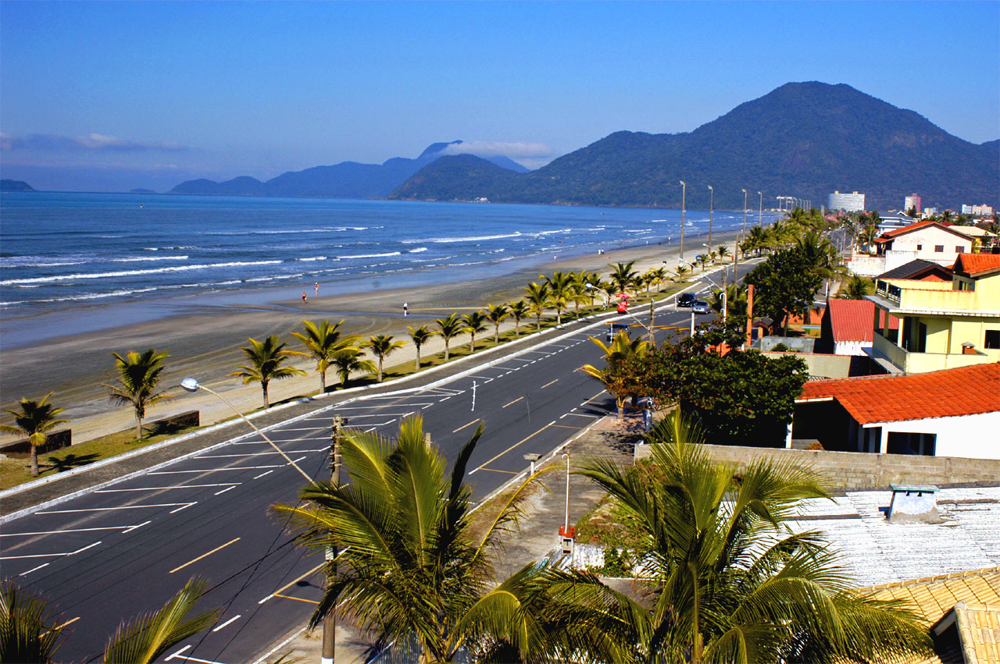

Peruíbe
Localizado como o último município da Baixada Santista ao sul, Peruíbe se destaca por suas praias preservadas, como a Praia do Costão, que proporciona um clima praiano único junto à Mata Atlântica.
Peruíbe abriga uma significativa parte da Estação Ecológica Juréia-Itatins, considerada Reserva da Biosfera pela Organização das Nações Unidas (ONU), com opções de trilhas e passeios de tirar o fôlego, incluindo áreas do Parque Estadual da Serra do Mar.
Em Peruíbe, histórias e mistérios fazem parte do charme local. A lenda da Pedra da Serpente conta que uma princesa indígena e seu amado foram transformados por Tupã em formações naturais — ela na ilha e ele em uma serpente de pedra — condenados a permanecer separados pelo mar.
Suas praias são variadas, desde areias batidas e escuras até as de areias finas e claras, oferecendo diferentes condições de mar, permitindo a prática de surfe ou apenas um relaxamento em águas tranquilas em alguns trechos.
